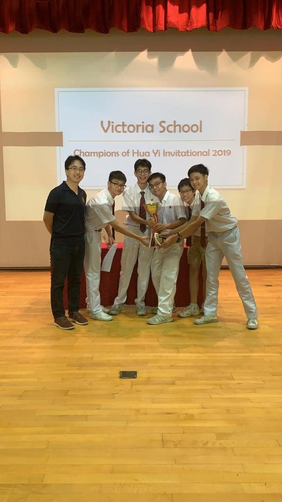
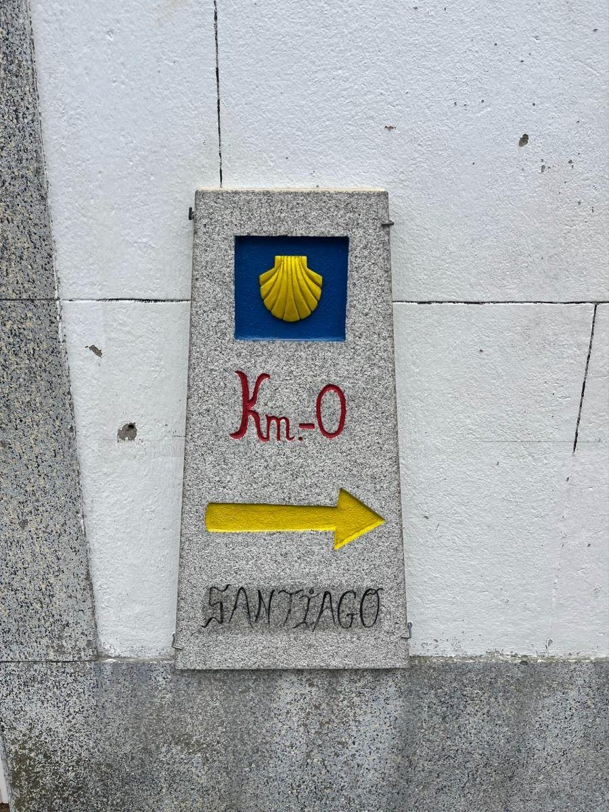
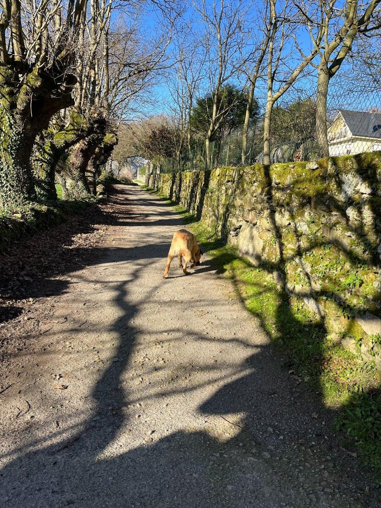
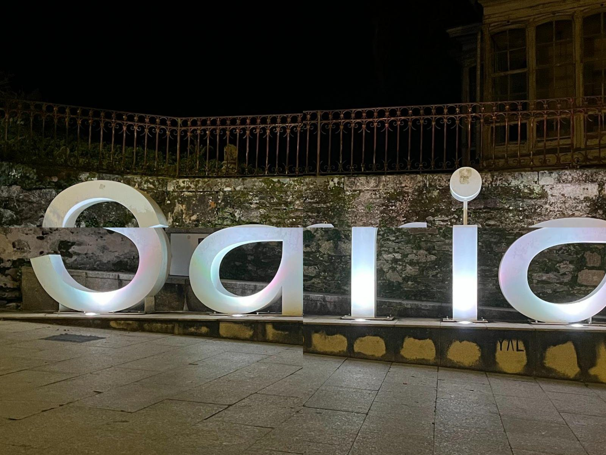
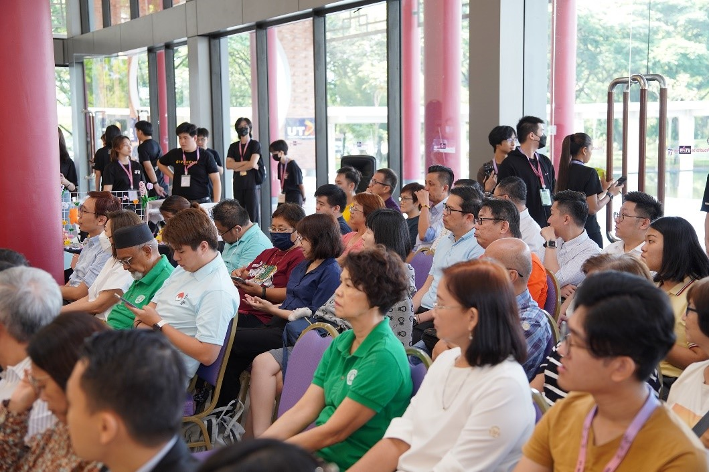
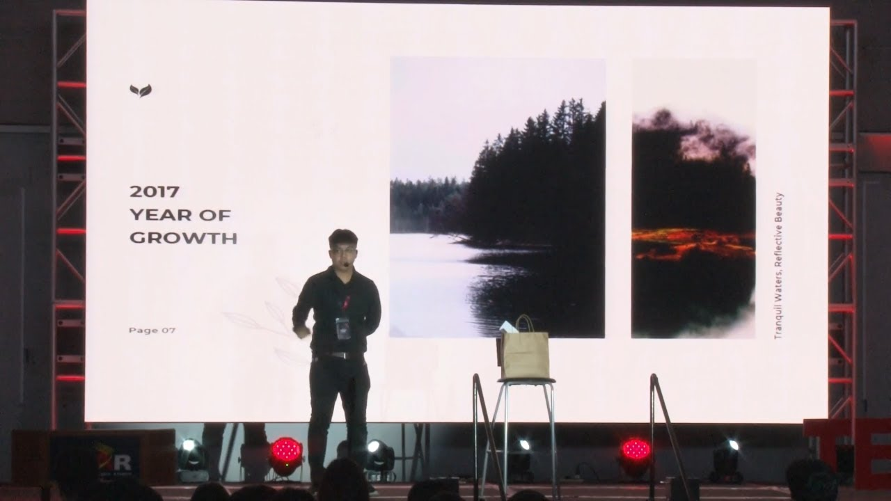
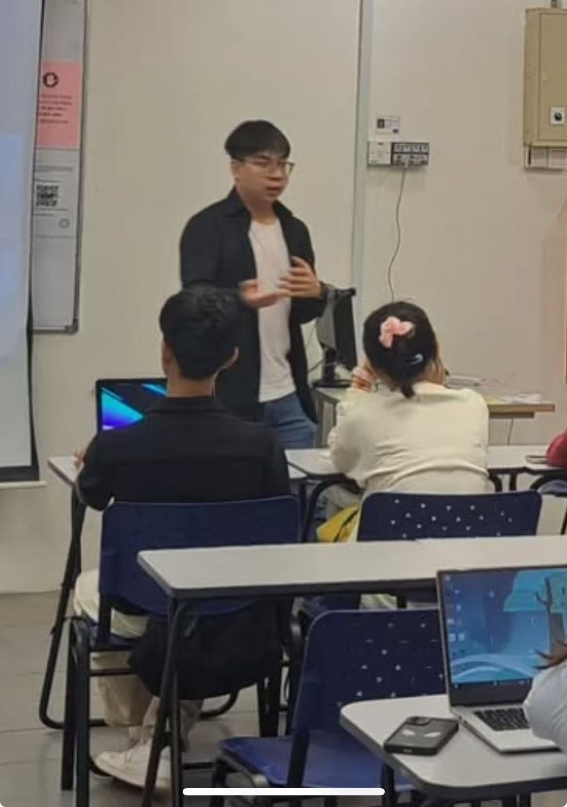

Brain-computer interfaces
A P300 EEG system lets a person pick one of four objects by attention, a Transformer decodes the brain response.
Hello, my name is
Electronic engineer · EEG-BCI researcher
A P300 EEG system lets a person pick one of four objects by attention, a Transformer decodes the brain response.
Vision-language models find the objects and a DOFBOT arm retrieves them. I also fine-tune these models with MaiStorage.
Debating since 2016, Hua Yi champion in 2019, and a TEDxUTAR Kampar speaker in 2025.
Kuala Lumpur, Singapore, Kampar and Taipei, with a 115 km walk across Galicia along the way.






Questions about my research, a collaboration or a talk? Send me an email.
Contact